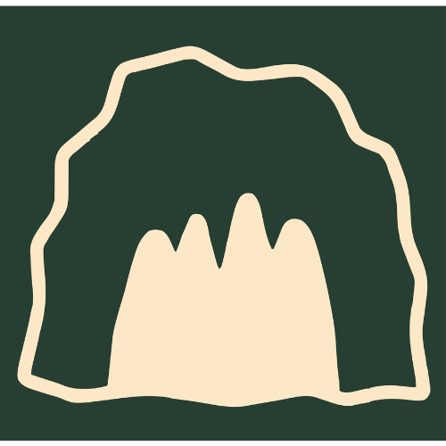

6 km
Distancia
6 km
Distancia
 1h
Duración
1h
Duración
 254m
Desnivel
254m
Desnivel
 Lineal
Tipo
Lineal
Tipo
Sobre la ruta
Desde el Ayuntamiento, tomamos la N-629 en dirección al Puerto de Los Tornos. A 300 metros, tras pasar el cuartel de la Guardia Civil, giramos a la izquierda por una carretera que pronto se convierte en un sendero que discurre por un encinar cantábrico. El camino bordea una imponente pared vertical de roca caliza, donde empieza la via ferrata El Cáliz.
Llegamos al aparcamiento, desde donde un sendero asciende hasta el Mirador de Covalanas, con vistas espectaculares al pueblo de Ramales, el Pico San Vicente y la Sierra del Hornijo. Continuando el ascenso, alcanzamos la entrada de la Cueva de Covalanas, decorada con pinturas rupestres de ciervas de hace más de 20.000 años. Justo debajo, la Cueva del Mirón completa este núcleo arqueológico excepcional.
Siguiendo el recorrido, llegamos a la Cueva de la Luz, antes de retomar el descenso, donde unas escaleras nos llevan hasta la Cueva el Haza, una ventana natural abierta al Pico San Vicente. El recorrido culmina en la Cueva de Cullalvera, cuya monumental entrada es uno de los rincones más impresionantes de la ruta. Desde aquí regresamos al Ayuntamiento, cerrando el círculo.
 Zona Picnic
Zona Picnic

Cueva Apta para niños
Apta para niños
 Calzada compartida
Calzada compartida
 Apta para bicicletas
Apta para bicicletas
 Restaurante
Restaurante